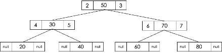

Data Structures – Quick Tabs
Arrays, Lists and Tuples
Static vs Dynamic Data Structures
| Aspect | Static Data Structure | Dynamic Data Structure |
|---|---|---|
| Definition | A static data structure has a fixed size that is determined at the time of creation and cannot change during execution. | A dynamic data structure can grow or shrink at runtime, allocating and deallocating memory as needed. |
| Examples | Array (mutable – can be changed) Tuple (immutable – cannot be changed) |
List, Linked List, Stack, Queue, Binary Tree, Graph |
| Advantages | • Fixed memory allocation at compile time • No overhead for resizing • Faster access via index |
• Flexible size • Efficient memory usage • Easy insertion, deletion, and merging |
| Disadvantages | • Fixed size may waste memory • Cannot grow or shrink during runtime |
• More complex to implement • Slower access (no direct indexing) • Extra memory overhead for pointers |
No Overhead for Resizing
This means that with static data structures, since the size is fixed and determined at compile time, the program does not need to perform any extra operations to change the size during runtime.
Array
An array is a data structure that stores multiple values of the same data type under a single identifier. Each element is accessed using an index.
Key Features:
- Allows multiple items of data to be stored under one identifier
- Can store data in a table (indexed) structure
- Reduces the need for multiple variables
Example Representation:
Array Elements: [12, 43, 5, 10, 69]
Array Indexes: [0, 1, 2, 3, 4]
Array vs List vs Tuple
| Aspect | Array | List | Tuple |
|---|---|---|---|
| Size | Static (fixed size) | Dynamic (can grow and shrink) | Fixed (cannot change at runtime) |
| Data Types | Same data type for all elements | Can store different data types | Can store different data types |
| Mutability | Mutable (values can be changed) | Mutable (elements can be changed, added, removed) | Immutable (cannot be modified) |
| Memory Allocation | Allocated at compile time | Allocated at runtime | Allocated at runtime |
| Memory Storage | Stored in contiguous memory locations | Stored in non-contiguous memory locations | Stored in contiguous memory locations |
| Access Speed | Fast sequential and indexed access | Slower than arrays | Fast indexed access |
| Example | Array birdName(4) birdName[0] = "pigeon" birdName[1] = "robin" birdName[2] = "blackbird" Result: ["pigeon","robin","blackbird",""] |
numbers = [] numbers.append(12) numbers.append(8) numbers.append(5) Result: [12, 8, 5] numbers.pop() Result: [12, 8] |
# Red colour
colour = (255, 0, 0)
|
| Special Notes | Supports multi-dimensional arrays (e.g., 2D arrays with rows and columns) | Efficient for frequent insertions and deletions | No adding, removing, or changing elements |
Exam Style Question – 2D Arrays (Column Means)
A two-dimensional (2D) array, data, holds numeric data that Karl has entered. The declaration for the array is:
array data[16, 11]The array data has 16 rows and 11 columns. The data in each row is in ascending numerical order.
Karl needs to analyse the data. He needs to find the mean average of each column of the array. The mean is calculated by adding together the numbers in the column and dividing by the quantity of numbers in the column.
For example, the first column mean would be: (1 + 3 + 0 + 12) / 4 = 4
Write an algorithm to output the mean value of each column in the array data. [5]
Mark Scheme (1 mark per bullet)
- Looping through each column
- Looping through each row
- Adding values to a running total
- Calculating the average correctly
- Outputting the average
OCR Pseudocode
for y = 0 to 10
total = 0
for x = 0 to 15
total = total + data[x, y]
next x
print(total / 16)
next yUsing range (Python-style)
for y in range(11):
total = 0
for x in range(16):
total = total + data[x][y]
print(total / 16)Exam Style Question – Declaring a 2D Array
A card game uses a set of 52 standard playing cards. There are four suits: hearts, diamonds, clubs, and spades. Each suit has a card with a number from 1 to 13.
The game randomly gives two players seven cards each. The unallocated cards form the deck.
Players take turns to turn over a card. A valid move is a card of the same suit or the same number as the last card played.
The winner is the first player to play all of their cards.
The cards are held in a 2D array called cards. The first index stores the card number and the second index stores the suit, both as strings.
Write a pseudocode statement or program code to declare the array cards.
array cards[7, 4]An alternative valid declaration could be:
array towns[3, 8]
1 Beth records how many steps she has completed over a seven-day period.
She stores the total number of steps for each day in a text file. For example:
"9000", "13680", "11254", "8258", "12326", "9244", "7542"
Beth would like a program that will take the values from the text file and then
calculate the average number of steps per day.
The values from the text file are copied into a 1d-array called steps
when the program starts.
Beth passes the array steps into a function called
findAverage which will return the average number of steps.
i. An alternative data structure Beth could have used is a list.
Describe two differences between a list and an array.
• An array is static / cannot grow / shrink (at run-time)
• A list is dynamic / can grow / shrink
• Array values must be of the same type
• List values can be of different types
ii. Write the function findAverage that will accept the array
steps as a parameter and then return the average number of steps.
You should write your answer using pseudocode or program code.
function findAverage(steps)
total = 0
for count = 0 to steps.length - 1
total = total + steps[count]
next count
average = total / 7
return average
end function
2. Declare a 2D array towns with 8 rows and 3 columns.
array towns[8][3] as string
3(a). Describe one difference between an array and a list.
Array is fixed-size/static (and often single type); list is dynamic (and can hold mixed types).
3(b). State how a tuple differs from a list.
A tuple is immutable (cannot be changed at runtime); a list is mutable.
Records
Records: Store related fields (possibly different data types) under one structure.
Records and Arrays of Records
Record
- A record is a data structure that groups together related items of data
- Can store more than one data type together
- A record is an unordered data structure
- Can have multiple instances
Example: Player Records
| Player | Name | Score |
|---|---|---|
| Player 1 | Olivia | 35 |
| Player 2 | Luke | 40 |
Creating a Record Structure (Pseudocode)
RECORD player
name : String
score : int
REARRECORDAdding Data to a Record (Pseudocode)
Player1 : player
Player1.name = "Olivia"
Player1.score = 35Array of Records
Records are treated as data types, so they can be held within a single array. This allows storage of multiple records within the same structure.
- Records can be stored in a 1D array
- Allows easy access, indexing, and manipulation of each record
- 1D array can hold multiple items of the same data type (record)
- Maximum number of array elements is known
Example: Array of Player Records
| Index | Name | Score |
|---|---|---|
| 0 | Olivia | 35 |
| 1 | Luke | 40 |
| 2 | Adam | 25 |
| 3 | Alex | 35 |
Array of Records Pseudocode
Players(100) AS player
Players(3).name = "Jane"Record vs Class
| Aspect | Record | Class |
|---|---|---|
| Data | A record is a data structure that stores data together, organised by attributes. | A class is a record with associated methods. Each object stores attributes together. |
| Set up in advance | Attributes and structure are defined by the programmer for a specific purpose. | Constructor method defines the class object. |
| Store different data types | Yes (e.g. name, type, age) | Yes |
| Multiple instances | Yes | Yes |
| Accessed by name | Yes | Yes |
| Differences | oes not include methods | Includes methods and can control visibility (e.g. private properties) |
Question
A games company has developed a game called Kidz Arrowz. Players throw an arrow at a target board and are awarded different points depending on which circle the arrow lands in.
A computer program is required to keep track of the scores for each competition. The user will enter the number of players, and the name of each player, in that competition to a maximum of 10.
The program will then ask for the score of each player in turn. Each competition has 8 rounds, with each player throwing one arrow each round. The program will then display the total score of each player.
The players are declared as a record structure:
record player(string playerName, integer totalScore)Question
(a) Describe what is meant by a record structure.
A record structure stores multiple related items under one name, and the items (fields) can be of different data types.
Question
(b) The records for the players are stored in a 1D array. State why a 1D array is a suitable data structure for the records.
A 1D array allows easy access to each player record using an index, makes it easy to process each record in turn using a loop, and is suitable because the maximum number of players is known.
Question
(c) Three data structures are arrays, records and stacks. Identify one other data structure.
Queue (other acceptable answers include list, tuple, tree, graph, or linked list).
Linked Lists
Linked Lists: Nodes connected by pointers; dynamic size but slower access.
- A linked list is a dynamic data structure – it can grow and shrink during runtime.
- A linked list can be unordered or ordered (alphabetical or numerical order).
- A linked list uses pointers to order the data.
- The items are not necessarily held in contiguous memory locations.
- The physical order in memory may not match the logical order of the list.
- Items can be added and removed without shifting any other items.
- Traversing a linked list always begins at the start / head node.
Difference Between a Linked List and an Array
Pros of linked lists:
- Flexible – elements can be inserted or deleted at any position efficiently.
- Uses dynamic allocation, so the size does not need to be known in advance.
Cons of linked lists:
- More complex to use and access than arrays.
- Pointers require extra memory.
- Random access is not allowed.
Requirements to Implement a Linked List
- Node object – stores the data and a pointer to the next item.
- Start pointer – used to store the first item.
- Null pointer (Ø) – specifies the end of the list.
- Free node – specifies the next free node in the list.
Node Object
class Node
public procedure new(pData)
data = pData // instance variable to store the data
next = None // instance variable storing address of next node
endprocedure
endclassUsing Getter and Setter Methods
class node
public function getData()
return data
endfunction
public function getNext()
return next
endfunction
public procedure setNext(pNext)
next = pNext
endprocedure
public procedure setData(pData)
data = pData
endprocedure
endclassExample usage:
data = input()
new_node = new node(data)
new_node.getData()
new_node.getNext()
new_node.setNext(next)
new_node.setData(data)Linked List Class
class linkedlist
private head : node
public procedure newLinkedList() // constructor
head = null
endprocedure
endclass
my_list = new linkedlist() // instantiate empty linked listInserting a Node (Ordered Linked List)
If the list is ordered, the new element must be inserted in the correct position.
- Store the data in the free node.
- Identify where the item should be inserted.
- Update the pointer of the previous item.
- Set the new item’s pointer to the next node.
- Update the free node pointer.
procedure insert_in_order(data)
new_node = new node(data)
current = head
// Case 1: empty list
if current == null then
head = new_node
// Case 2: insert before head
else if new_node.getData() < current.getData() then
new_node.setNext(current)
head = new_node
// Case 3: insert in middle or end
else
while current.getNext() != null AND
current.getNext().getData() < new_node.getData()
current = current.getNext()
endwhile
new_node.setNext(current.getNext())
current.setNext(new_node)
endif
endprocedureUnordered Linked List Insertion
Insert at Head (fastest method)
procedure insert_unordered(data)
new_node = new node(data)
new_node.setNext(head)
head = new_node
endprocedureInsert at End
procedure insert_end(data)
new_node = new node(data)
if head == null then
head = new_node
else
current = head
while current.getNext() != null
current = current.getNext()
endwhile
current.setNext(new_node)
endif
endprocedureUsed when order does not matter (e.g. stack insertion at head, queue insertion at end).
Removing a Node (Delete Algorithm)
- Traverse the list from the head.
- If the list is empty, stop.
- If the head contains the target data, update the head pointer.
- Otherwise, find the node before the one to delete.
- Update pointers to skip the deleted node.
procedure delete(data)
current = head
// Case 1: empty list
if current == null then
return
// Case 2: delete head
else if current.getData() == data then
head = current.getNext()
// Case 3: delete elsewhere
else
while current.getNext() != null AND
current.getNext().getData() != data
current = current.getNext()
endwhile
if current.getNext() != null then
current.setNext(current.getNext().getNext())
endif
endif
endprocedureNote: Nodes do not move in memory; only pointers are updated.
Traversing a Linked List
Example task: count how many times a particular name occurs in a linked list.
- Initialise a counter.
- Set current node to the head.
- If pointer is NULL, list is empty.
- Compare data and update counter if matched.
- Move to next node.
- Repeat until NULL is reached.
procedure traverse()
current = head
while current != null
print(current.getData())
current = current.getNext()
endwhile
endprocedureSearching a Linked List
Searching must use a linear search.
function search(item)
current = head
found = false
while current != null AND not found
if current.getData() == item then
found = true
else
current = current.getNext()
endif
endwhile
return found
endfunction1.A programmer is developing an ordering system for a fast food restaurant. When a member of staff inputs an order, it is added to a linked list for completion by the chefs.
Each element in a linked list has:
- a pointer, nodeNo, which gives the number of that node
- the order number, orderNo
- a pointer, next, that points to the next node in the list
Fig. 2.1 shows the current contents of the linked list, orders.
Ø represents a null pointer.
| nodeNo | orderNo | next |
|---|---|---|
| 0 | 154 | 1 |
| 1 | 157 | 2 |
| 2 | 155 | 3 |
| 3 | 156 | Ø |
Fig. 2.1
(i) Order 158 has been made and needs adding to the end of the linked list.
Add the order, 158, to the linked list as shown in Fig. 2.1. Show the contents of the linked list in the following table. [2]
| nodeNo | orderNo | next |
|---|---|---|
| 0 | 154 | 1 |
| 1 | 157 | 2 |
| 2 | 155 | 3 |
| 3 | 156 | 4 |
| 4 | 158 | Ø |
Explanation:
The new node (node 4) is added to the end of the list. The previous last node (node 3) now points to node 4.
(ii)Order 159 has been made. This order has a high priority and needs to be the second order in the linked list.
Add the order, 159, to the original linked list as shown in Fig. 2.1. Show the contents of the linked list in the following table. [3]
| nodeNo | orderNo | next |
|---|---|---|
| 0 | 154 | 4 |
| 4 | 159 | 1 |
| 1 | 157 | 2 |
| 2 | 155 | 3 |
| 3 | 156 | Ø |
Explanation:
The new node (node 4) is inserted after the first node. Node 0 now points to node 4, and node 4 points to node 1.
2.A program needs to store the names of plants that are in a garden, so they can be easily found and accessed in alphabetical order.
The data is stored in a tree structure. Part of the tree is shown in Fig. 2.1 The elements in the tree are read into a linked list producing an alphabetised list.
| Data item | Data | NextPointer |
|---|---|---|
| 0 | Begonia | |
| 1 | Daisy | |
| 2 | Hosta | |
| 3 | Lily | |
| 4 | Peony | |
| 5 | Rose | |
| 6 | Sunflower | |
| 7 | ||
| 8 |
(i) Complete the following table to show the linked list for the data. [2]
| Data item | Data | NextPointer |
|---|---|---|
| 0 | Begonia | 1 |
| 1 | Daisy | 2 |
| 2 | Hosta | 3 |
| 3 | Lily | 4 |
| 4 | Peony | 5 |
| 5 | Rose | 6 |
| 6 | Sunflower | null |
| 7 | ||
| 8 |
(ii)A new plant, Lavender, needs adding to the linked list. The linked list must retain its alphabetical order.
Complete the table to show the linked list after Lavender is added. [3]
| Data item | Data | NextPointer |
|---|---|---|
| 0 | Begonia | |
| 1 | Daisy | |
| 2 | Hosta | |
| 3 | Lily | |
| 4 | Peony | |
| 5 | Rose | |
| 6 | Sunflower | |
| 7 |
| Data item | Data | NextPointer |
|---|---|---|
| 0 | Begonia | 1 |
| 1 | Daisy | 2 |
| 2 | Hosta | 7 |
| 3 | Lily | 4 |
| 4 | Peony | 5 |
| 5 | Rose | 6 |
| 6 | Sunflower | null |
| 7 | Lavender | 3 |
Lavender is inserted between Hosta and Lily to preserve alphabetical order.
(iii)Hosta needs removing from the linked list.
Explain how a data item is removed from a linked list. Use the removal of Hosta in your answer. [4]
- Traverse the list to find the item before the one to be removed (Daisy)
- Find the NextPointer of the item being removed (Hosta → 7)
- Update the previous item’s NextPointer to skip Hosta
- Daisy’s NextPointer is updated from 2 to 7 (Lavender)
(iv)The linked list is stored as a 2D array with the identifier plantList. The index of the first element is stored in firstElement.
Write an algorithm to follow the pointers and output the contents of the linked list in alphabetical order. Add comments to explain your code. [5]
currentElement = firstElement // start at first node
while currentElement != null // loop until end of list
print(plantList[currentElement, 0]) // output data
currentElement = plantList[currentElement, 1] // move to next node
endwhileStacks
Stacks: LIFO (Last In, First Out).
Stacks & Queues
General Characteristics
- Linear data structures represented by a sequential collection of elements in a fixed order
- Dynamic size
- Can contain elements of different data types
- Random access of elements is not allowed
- Implemented using a list or linked list
| Stack | Queue |
|---|---|
| LIFO – Last In, First Out | FIFO – First In, First Out |
| Only the top element can be accessed | Only the front element can be accessed |
| One pointer: stack pointer Points to the topmost (last inserted) element |
Two pointers: front and rear |
| push(data) – Add element to stack pop() – Remove element from stack peek() – View top element without removing isFull() – Check if stack is full isEmpty() – Check if stack is empty |
enqueue(data) – Add element to the rear dequeue() – Remove element from the front isFull() – Check if queue is full isEmpty() – Check if queue is empty |
| Uses: • Browser history (Back button) • Undo operations in text editors • Function call stack (program execution) |
Uses: • Printer queue (print jobs in order) • Customer service queue • Task scheduling (e.g. CPU process queue) |
Stack Pointer, Push & Pop Algorithms
Stack Pointer
The stack pointer points to the top element in the stack. In some representations (especially in exams), it may instead point to the next available free space.
Stack PUSH Algorithm
- Check if the stack is full.
- If the stack is full, generate an error and exit.
- If the stack is not full, increment
topto point to the next empty space. - Add the data element where
topis pointing.
Pseudocode: PUSH
if isFull() then
print "stack overflow"
else
top = top + 1
stack[top] = item
end ifisFull() Condition
if stack.length == MAXStack POP Algorithm
- Check if the stack is empty.
- If the stack is empty, generate an error and exit.
- If the stack is not empty, access the data at
top. - Decrease
topby 1. - Return the item.
Pseudocode: POP
if isEmpty() then
print "stack underflow"
else
item = stack[top]
top = top - 1
return item
end ifisEmpty() Condition
if top == -1
if stack.length == 0Display Items in Stack Algorithm
if isEmpty() then
print "stack empty"
else
for i = top to 0
print stack[i]
next i
end ifAlternative Stack Representation
In some exam questions, the stack pointer points to the next available free space instead of the top item.
PUSH (Alternative Representation)
if stackPointer > 9 then
print "stack overflow"
else
stack[top] = item
top = top + 1
end ifPOP (Alternative Representation)
if stackPointer == 0 then
print "stack underflow"
else
top = top - 1
item = stack[top]
return item
end ifExam Notes
- Check whether the stack pointer refers to the top item or the next empty space.
- Use the identifiers exactly as given in the question.
- Think carefully when determining
isEmpty()andisFull()conditions.
Example
theStack.push("H") places the character H onto the stack.
Procedure Example: pushToStack
procedure pushToStack(message)
for x = 0 to message.length - 1
messageStack.push(message.substring(x,1))
next x
endprocedureLinear Stack Implementation
| Procedural Linear Stack Implementation | OOP Linear Stack Implementation |
|---|---|
|
|
Key Differences
- Procedural: Data and functions are separate; stack and top must be passed between procedures.
- OOP: Data and methods are bundled together inside a class.
- OOP approach improves encapsulation, readability, and reusability.
1.
A computer program stores data input on a stack named dataItems. The stack has two sub-programs to add and remove data items from the stack. The stack is implemented as a 1D array, dataArray.
The current contents of dataItems are shown below:
| TOP → | 6 |
| 15 | |
| 100 | |
| 23 |
The main program asks a user to push or pop an item from the stack. If the user chooses push, the data item is added to the stack. If the user chooses pop, the next item is removed from the stack, multiplied by 3 and output.
Main program:
userAnswer = input("Would you like to push or pop an item?")
if userAnswer == "push" then
push(input("Enter data item"))
else
print(pop() * 3)
endif(a)(ii)
push()
- Check if the stack is full
- If not full, insert the item
- If full, return or output an error
pop()
- Check if the stack is empty
- If empty, return or output an error
- If not empty, remove and return the top item
(b)The stack is implemented as a 1D array, dataArray. Describe how a 1D array can be set up and used to push and pop items as a stack. [3]
- The array size is defined
- A stack pointer is used to point to the top of the stack
- When an item is pushed, the stack pointer is incremented
- When an item is popped, the stack pointer is decremented
2.A user enters whole numbers into a computer program. Each number entered is placed onto a stack. The stack is created using an array with a maximum of 20 elements.
Part of the array, numStack, is shown when one number has been input. The pointer, top, points to the next free space in the stack.
| Index | stackItem | |
|---|---|---|
| 8 | ||
| 7 | ||
| 6 | ||
| 5 | ||
| 4 | ||
| 3 | ||
| 2 | ||
| TOP → | 1 | |
| 0 | 20 |
A function, addItem, takes a number as a parameter and adds the number to the stack. The function returns true if this was successful, and false if the stack is already full.
Understanding:
- The stack uses an array of fixed size (20)
- The top pointer tracks the next free position
- Items are added and removed from the top only
(iii)Give one reason why a function is used instead of a procedure in this scenario. [1]
A function is used because it returns a value (true or false), whereas a procedure does not return a value.
(iv)The function addItem is written but incomplete. Complete the function addItem. [5]
function addItem(number)
if top = __ then
return false
else
numStack[top] = _________
top = _____ + 1
________ _________
endif
endfunctionfunction addItem(number)
if top = 20 then
return false
else
numStack[top] = number
top = top + 1
return true
endif
endfunctionMark scheme points:
- Correct function header
- Check if stack is full
- Add value to stack
- Increment top pointer
- Return true/false correctly
(b)An encryption routine reads a line of text from a file, reverses the order of the characters and subtracts 10 from the ASCII value of each letter, then saves the new string into the same file.
Describe the steps the program would take to encrypt the characters stored in the stack and save them in a single variable. [5]
- Pop a character from the stack
- Convert the character to its ASCII value
- Subtract 10 from the ASCII value
- Convert back to a character
- Append/concatenate the character to a variable
(ii)The method push() accepts an integer as a parameter and adds it to the top of the stack unless the stack is already full.
If the push is successful the method returns true. If the push is unsuccessful due to the stack being full the method returns false.
Write the method push() using either pseudocode or program code. [6]
function push(value)
if pointerValue < 100 then
stackArray[pointerValue] = value
pointerValue = pointerValue + 1
return true
else
return false
endif
endfunctionMark scheme points:
- Correct function header
- Takes a parameter
- Checks if the stack is full
- Adds value to top of stack
- Increments stack pointer
- Returns true or false correctly
(iii) The main program initialises a new object of type stack with the identifier mathsStack.
Write pseudocode or program code to declare the object. [2]
mathsStack = new stack()(iv) The main program needs to:
- take numbers as input from the user
- push them onto the stack mathsStack until the stack is full
- output an appropriate message if the stack is full
Complete the pseudocode algorithm to meet these requirements. [4]
returnValue = true
while returnValue == __________
returnValue = mathsStack.__________(input("Enter Number"))
if returnValue == __________ then
__________("Stack full")
endif
endwhilereturnValue = true
while returnValue == true
returnValue = mathsStack.push(input("Enter Number"))
if returnValue == false then
print("Stack full")
endif
endwhile(v) The main program also needs to:
- remove one item from the stack at a time and add this to a total
- output the total every time an item is removed
- stop removing items when either the stack is empty or 20 items have been removed
Write pseudocode or program code to meet these requirements. [8]
total = 0
quantity = 0
returnValue = 0
while quantity < 20 and returnValue != -1
returnValue = mathsStack.pop()
if returnValue != -1 then
quantity = quantity + 1
total = total + returnValue
print(total)
endif
endwhile3.
9(a). The contents of a stack are stored in the 1-dimensional array called numbers.
topStack stores the index of the next free space in the stack.
The array is declared with space for 100 elements.
The function pop() returns the next item from the stack and updates the appropriate pointers.
Describe the steps in the function pop(). [4]
9(b). The function push() inserts its parameter called dataValue onto the stack and updates the appropriate pointers.
Complete the function push() using pseudocode or program code.
function push(... ......................................)
if ................................... ! = 100 then
numbers [...................................] = dataValue
topStack = topStack + ...................................
return true
else
return false
endif
endfunction9(c). Write an algorithm, using pseudocode or program code, to call the function push() with the value 15 and output a message saying “Added” if the value was successfully inserted onto the stack or “Not Added” if the stack is full. [4]
Mark scheme answer
9(a) pop() steps (any valid wording):
- Check if the stack is empty / check topStack is equal to 0.
- If empty, return a suitable value (e.g. -1 / null) or give a warning / do nothing.
- If not empty, decrement topStack.
- Return the value in element topStack from the array numbers.
9(b) Completed push() function:
function push(dataValue)
if topStack != 100 then
numbers[topStack] = dataValue
topStack = topStack + 1
return true
else
return false
endif
endfunction9(c) Example algorithm to push 15 and output message:
result = push(15)
if result then
print("Added")
else
print("Not Added")
endifQueues
Queues: FIFO (First In, First Out).
Queues
General Characteristics
- Linear data structures represented by a sequential collection of elements in a fixed order
- Dynamic size
- Can contain elements of different data types
- Random access of elements is not allowed
- Implemented using a list or linked list
| Stack | Queue |
|---|---|
| LIFO – Last In, First Out | FIFO – First In, First Out |
| Only the top element can be accessed | Only the front element can be accessed |
| One pointer: stack pointer Points to the topmost (last inserted) element |
Two pointers: front and rear |
| push(data) – Add element to stack pop() – Remove element from stack peek() – View top element without removing isFull() – Check if stack is full isEmpty() – Check if stack is empty |
enqueue(data) – Add element to the rear dequeue() – Remove element from the front isFull() – Check if queue is full isEmpty() – Check if queue is empty |
| Uses: • Browser history (Back button) • Undo operations in text editors • Function call stack (program execution) |
Uses: • Printer queue (print jobs in order) • Customer service queue • Task scheduling (e.g. CPU process queue) |
Queue Algorithms (Linear Queue)
Enqueue Algorithm
enqueue(item) inserts the given data item at the rear of the queue.
- Check if the queue is full.
- If full, output an error and stop.
- Otherwise, increment the rear pointer.
- Insert the new data item at the rear position.
Pseudocode: Enqueue
if isFull() then
print "overflow"
else
rear = rear + 1
queue[rear] = data
end ifWorking out isFull()
if rear == maxSize - 1
# OR
if size == MAXDequeue Algorithm
dequeue() removes and returns the item at the front of the queue.
- Check if the queue is empty.
- If empty, output an error and stop.
- Otherwise, copy the data at the front pointer.
- Increment the front pointer.
- Return the data.
Pseudocode: Dequeue
if isEmpty() then
print "queue is empty"
else
data = queue[front]
front = front + 1
return data
end ifWorking out isEmpty()
if front > rear
# OR
front = 0
rear = -1
# OR using size counter
if size == 0Displaying a Linear Queue
for i = front to rear
print queue[i]
next iExam Notes
- Front and rear pointers may be defined either way around — always follow the exam question’s definition.
- Pointers may be referred to as front/rear or head/tail.
- The queue may be linear or circular; this will be stated in the question.
Circular Queue Algorithms
In a circular queue, when items are removed from the front, new data can be added at the rear using the spaces vacated at the front.
Enqueue Algorithm (Circular Queue)
- Check if the queue is full.
- If full, output an error and stop.
- If the rear pointer equals
maxSize - 1, reset rear to0. - Otherwise, increment the rear pointer by 1.
- Insert the new data item at the rear position.
- Increment
sizeby 1.
Pseudocode: Enqueue (Circular)
if isFull() then
print "overflow"
else
if rear == maxSize - 1 then
rear = 0
else
rear = rear + 1
end if
queue[rear] = data
size = size + 1
end ifisFull() Condition
if size == maxSize
return TrueDequeue Algorithm (Circular Queue)
- Check if the queue is empty.
- If empty, output an error and stop (reset front and rear pointers).
- Otherwise, copy data from the front pointer position.
- If front equals
maxSize - 1, reset front to0. - Otherwise, increment the front pointer by 1.
- Decrement
sizeby 1. - Return the data.
Pseudocode: Dequeue (Circular)
if isEmpty() then
print "empty"
front = 0
rear = -1
else
data = queue[front]
if front == maxSize - 1 then
front = 0
else
front = front + 1
end if
size = size - 1
return data
end ifisEmpty() Condition
if size == 0Displaying a Circular Queue
Displaying a circular queue requires wrapping around the array when the end is reached.
if isEmpty() then
print "Queue is empty"
else
temp = front
for i = 0 to size - 1
print queue[temp]
temp = temp + 1
if temp == maxSize then
temp = 0
end if
next i
end ifExam Notes
- Front and rear pointers may be defined either way around — follow the exam question carefully.
- Pointers may be referred to as head/tail or front/rear.
- The queue type (linear or circular) will be specified in the exam question.
Priority Queue
A priority queue is a type of abstract data structure where each element has an associated priority. Instead of being processed in the order they were added (as in a normal queue), elements are processed based on their priority.
Key Features
- Each item in the queue has:
- A value
- A priority level
- The element with the highest priority is removed first
- If two elements have the same priority, they are processed in FIFO (First In, First Out) order
Operations
- Insert (enqueue) – Add an element with a priority
- Remove (dequeue) – Remove the element with the highest priority
Implementation
- Arrays / Lists (less efficient)
- Heaps (more efficient, e.g. binary heap)
Example Use Cases
- Task scheduling (e.g. CPU processes)
- Dijkstra’s algorithm (shortest path in graphs)
- Emergency room triage systems
Concept Illustration
In a priority queue, the element with the highest priority (e.g. 2) is dequeued first, while the element with the lowest priority (e.g. 10) remains until later.
Linear Queue Implementation
| Procedural Linear Queue Implementation | OOP Linear Queue Implementation |
|---|---|
|
|
Key Differences
- Procedural approach: Queue data and pointers are passed between functions.
- OOP approach: Queue data and operations are encapsulated within a class.
- OOP queues improve modularity, readability, and reuse of code.
1(a). A program stores a queue of mathematical questions to be asked to a user. The questions are asked in the order they are added. Once a question has been asked it cannot be asked again. New questions are continually added to the end of the queue.
Describe why a queue is a suitable structure for this program. [3]
| Q1 | Q2 | Q3 | |
| head | tail |
- A queue operates using FIFO (First In, First Out)
- Questions are retrieved in the order they were added
- New questions are added to the end of the queue
1(b). Complete the following algorithm to remove and output the first element in the queue. [4]
procedure remove()
if head == tail + 1 then
print("No questions")
else
print(questions[head])
head = head + 1
endif
endprocedureMark scheme points:
- Check if the queue is empty
- Output an error/message if empty
- Output the element at index
head - Increment
head
Queue Class Data Structure
Kamran is writing a program to manipulate the data for a set of items. The items are added to a queue for processing.
For each item, the program needs to store:
- Item name
- Cost
- Date of arrival
- Transferred (true/false)
The queue is defined as a class called itemQueue. The array theItems stores the items. The head pointer stores the index of the first element, the tail pointer stores the index of the next available space, and numItems stores the number of items in the queue.
| Index | 0 | 1 | 2 | 3 | 4 | 5 | 6 | 7 | 8 | 9 |
|---|---|---|---|---|---|---|---|---|---|---|
| Element | Data | Data | Data | Data | Data | Data | Data |
Next item will be added at index 0 (circular queue)
(i) Define the term queue. [2]
- A data structure
- First In, First Out (FIFO)
(ii) The attributes in itemQueue are all declared as private. Explain how a private attribute improves the integrity of the data. [2]
- Attributes are encapsulated and accessed only through methods
- Validation can be enforced before data is changed
- Prevents accidental or invalid modification
(iii) The constructor method creates a new instance of itemQueue and sets the head, tail and numItems attributes to 0. Write an algorithm for the constructor. [2]
public procedure new()
head = 0
tail = 0
numItems = 0
endprocedure(iv) Write an algorithm for the enqueue method. [6]
public function enqueue(newItem : Items) : boolean
if numItems = 10 then
print("Error: The queue is full")
return false
else
theItems[tail] = newItem
if tail = 9 then
tail = 0
else
tail = tail + 1
endif
numItems = numItems + 1
return true
endif
endfunction(v) Write a programming statement to declare an instance of itemQueue called myItems. [1]
myItems = new itemQueue()
(vi) Write a procedure insertItems() to ask the user to input item data and add the items to the queue until it is full. [5]
procedure insertItems()
newItem : Items
itemCount = myItems.getnumItems()
while itemCount < 10
newItem.itemName = input("Enter the item name")
newItem.cost = input("Enter the item cost")
newItem.dateArrival = input("Enter the date of arrival")
newItem.transferred = input("Has it been transferred?")
myItems.enqueue(newItem)
itemCount = itemCount + 1
endwhile
myItems.setnumItems(itemCount)
endprocedure(vii) When the main program ends, the items and the queue no longer exist. Describe how Kamran could amend the program so the items and queue still exist the next time the program is run. [2]
Store the items and queue in an external file when the program closes, and load them from the file when the program starts.
3. The array queue shown below is set up to hold a small queue. Assume that there is sufficient storage to hold all necessary additions to the queue.
The table below shows variables that are used to maintain the queue:
| Variable | Type | Purpose |
|---|---|---|
| front | integer | Pointer to the front element of the queue |
| rear | integer | Pointer to the rear element of the queue |
| queue_full | Boolean | Indicates whether the queue is full |
| max | integer | The maximum size of the queue |
Shown below is an algorithm that is intended to add an item to the queue.
procedure add_to_queue(item)
if rear == max then
queue_full = true
else
front = front + 1
queue[front] = item
endif
endprocedureThis procedure attempts to add an item to the queue but contains a logic error.
Identify the parameter that is passed to this procedure. [1]
item
Describe the logical decision that is made. [2]
- The queue is checked to see if it is full
- If it is full, the process stops
- If it is not full, the item is added
This algorithm contains a logic mistake. Explain what the mistake is. [2]
- The front pointer is incremented
- The item is placed at (or near) the front of the queue
- Items should be added at the rear of the queue
Rewrite the algorithm to correct the mistake. [2]
rear = rear + 1
queue[rear] = item4. Describe how an array can be used to implement a queue data structure. [3]
- The queue uses a head pointer and a tail pointer
- When an item is enqueued, the tail pointer increments
- When an item is dequeued, the head pointer increments
5(a) The current contents of a queue data structure are shown.
State the purpose of headPointer and tailPointer in the queue.
headPointer: Identifies the first item in the queue / the item to be removed next (dequeue).
tailPointer: Identifies the next free space in the queue / where the next item will be added (enqueue).
(b) enqueue adds data to the queue and dequeue removes data.
Show the contents of the queue and the position of both pointers after the following actions:
enqueue(20)dequeue()dequeue()
The value 20 is added at the position indicated by tailPointer.
Each dequeue moves headPointer forward by one position.
The remaining queue contents stay in the same array positions; items are not shifted.
headPointer points to the next item to be removed, and tailPointer points to the next free space.
(c) The queue stores ID numbers of jobs. Some jobs have priority and must be processed first.
Explain why this queue is not suitable for this program.
A queue is a FIFO (First In, First Out) structure.
Jobs cannot be inserted at the front or reordered based on priority.
Higher-priority jobs cannot be processed before earlier jobs, making a standard queue unsuitable.
Binary Trees
Binary Trees: Hierarchical structures where each node has up to two children.
Tree
A tree is a non-linear, hierarchical data structure made up of nodes connected by edges. It has one root node and zero or more child nodes. Leaf nodes have no children.
Diagram placeholder: Tree showing root, children, edges and leaf nodes

| Term | Description |
|---|---|
| Root | Top node of the tree |
| Node | Stores a data value |
| Edge | Connection between nodes |
| Leaf | Node with no children |
Binary Search Tree (BST)
A BST is a binary tree where values in the left subtree are smaller than the node, and values in the right subtree are larger.
BST showing left < root < right

| Property | Explanation |
|---|---|
| Children | Maximum of two per node |
| Balanced | Search time O(log n) |
| Unbalanced | Search time degrades to O(n) |
What is a Binary Tree?
A binary tree is a non-linear data structure where each node can have a maximum of two children, called the left child and the right child.
Method 1: Linked-Node Implementation
Each node is an object that stores the data and references (pointers) to its left and right children. The tree stores a reference to the root node.

| Component | Purpose |
|---|---|
| data | Stores the value in the node |
| left | Reference to left child node |
| right | Reference to right child node |
| root | Reference to the first node in the tree |

class Node
private data
private left
private right
procedure new(new_data)
data = new_data
left = null
right = null
end procedure
end class
class BinaryTree
private root
procedure new()
root = null
end procedure
end classMethod 2: Array / Table Implementation
The binary tree is stored in a table (often a 2D array). Each row represents a node and stores the node’s data and the indexes of its left and right children.
Table showing node index, data, left index, right index
| Index | Data | Left Child | Right Child |
|---|---|---|---|
| 1 | 50 | 2 | 3 |
| 2 | 30 | 4 | 5 |
| 3 | 70 | null | null |
# Each row stores: data, leftIndex, rightIndex
tree[1] = [50, 2, 3]
tree[2] = [30, 4, 5]
tree[3] = [70, null, null]Comparison of Implementations
| Feature | Linked-Node | Array / Table |
|---|---|---|
| Memory size | Dynamic | Often fixed |
| Insertion & deletion | Easier | More complex |
| Exam suitability | Good | Very common |
Algorithm: Insert into a Binary Search Tree

| Step | Action |
|---|---|
| 1 | Create a new node |
| 2 | If root is null, set root = new node |
| 3 | Compare value and move left or right |
| 4 | Insert at first null pointer |
Procedure insert(new_value)
new_node = new Node(new_value)
if root == null then
root = new_node
return
end if
current = root
parent = null
while current != null
parent = current
if new_value < current.data then
current = current.left
else
current = current.right
end if
end while
if new_value < parent.data then
parent.left = new_node
else
parent.right = new_node
end if
End procedureAlgorithm: Delete a Node from a Binary Search Tree (BST)
Deleting a node from a BST depends on how many children the node has. The tree must remain ordered after deletion.
| Case | Situation | Action |
|---|---|---|
| Leaf node | No children | Remove the node by setting the parent pointer to null |
| One child | Left or right child only | Replace the node with its child (parent points to child) |
| Two children | Left and right children | Find the in-order successor (smallest value in right subtree), copy its value into the node, then delete the successor |
BST delete cases (leaf, one child, two children)

Procedure delete(root, target)
current = root
parent = null
# Step 1: Find node to delete
while current != null and current.data != target
parent = current
if target < current.data then
current = current.left
else
current = current.right
end if
end while
if current == null then
return # value not found
end if
# Step 2: Case 1 – No children
if current.left == null and current.right == null then
if parent == null then
root = null
else if parent.left == current then
parent.left = null
else
parent.right = null
end if
# Step 3: Case 2 – One child
else if current.left == null or current.right == null then
if current.left != null then
child = current.left
else
child = current.right
end if
if parent == null then
root = child
else if parent.left == current then
parent.left = child
else
parent.right = child
end if
# Step 4: Case 3 – Two children
else
successor_parent = current
successor = current.right
while successor.left != null
successor_parent = successor
successor = successor.left
end while
current.data = successor.data
if successor_parent.left == successor then
successor_parent.left = successor.right
else
successor_parent.right = successor.right
end if
end if
End procedureTree Traversals
| Traversal | Order | Use |
|---|---|---|
| Pre-order | Root → Left → Right | Copy tree |
| In-order | Left → Root → Right | Sorted output |
| Post-order | Left → Right → Root | Delete tree |
| Breadth-first | Level by level | Shortest path |
Algorithm: Pre-order Traversal
Procedure preorder(node)
if node != null then
print(node.data)
preorder(node.left)
preorder(node.right)
end if
End procedureAlgorithm: In-order Traversal
Procedure inorder(node)
if node != null then
inorder(node.left)
print(node.data)
inorder(node.right)
end if
End procedureAlgorithm: Post-order Traversal
Procedure postorder(node)
if node != null then
postorder(node.left)
postorder(node.right)
print(node.data)
end if
End procedureAlgorithm: Breadth-First Traversal
Procedure breadth_first(root)
if root == null then return
q = queue()
q.enqueue(root)
while q not empty
current = q.dequeue()
print(current.data)
if current.left != null then
q.enqueue(current.left)
end if
if current.right != null then
q.enqueue(current.right)
end if
end while
End procedureExam Style Questions
1(a) Describe what is meant by a binary tree.
A binary tree is a hierarchical, non-linear data structure where each node can have a maximum of two children, usually called the left and right child.
1(b) Explain one advantage of using a binary search tree instead of a one-dimensional array to store ordered data.
Searching for a value in a balanced binary search tree is faster, with a time complexity of O(log n), compared to O(n) for a one-dimensional array.
1(c) State the order in which the nodes of a binary tree are visited during an in-order traversal.
Left subtree, root node, right subtree.
2. A program stores entered data in a binary search tree.
The current contents of the tree are shown:

A pseudocode algorithm is written to search the tree to determine if the data item “Sweden” is in the tree.
The function currentNode.left() returns the node positioned to the left of currentNode.
The function currentNode.right() returns the node positioned to the right of currentNode.
Complete the algorithm.
thisNode = getData(currentNode)
if thisNode == searchValue then return true
elseif thisNode < searchValue then
if currentNode.left() != null then return searchForData(currentNode.left(), searchValue)
else return false
else
if currentNode.right() != null then return searchForData(currentNode.right(), searchValue)
else return false
3. Identify two preconditions needed of a tree for this algorithm to work. [2]
It is a binary tree.
It is ordered / sorted.
4(a). A data structure is shown below in Fig. 4.1.

Identify the data structure shown in Fig. 4.1. [1]
Tree / undirected graph
4(b) Explain the difference between a depth-first (post-order) traversal and a breadth-first traversal. [4]
Depth-first explores one branch fully before backtracking and uses a stack.
Breadth-first visits all nodes at each level before moving down and uses a queue.
5. Show how a depth-first (post-order) traversal would find the path between node A and node X for the structure shown in Fig. 4.1. [6]
D → K → L → H → B → G (X)
6. Kira uses a tree data structure shown in Fig. 1 to identify the range of possible moves the computer can make.

Show how a breadth-first traversal would traverse the tree shown in Fig. 1. [4]
A
B, C, E
D, F, G, H
I, J
7. A binary search tree, numbers, stores numbers that are entered into a computer. The contents of the tree are shown below:

Explain how a depth-first (post-order) traversal is performed. [5]
Visit left subtree, then right subtree, then root.
Example order: 5, 31, 20, 48, 45, 60, 92, 88, 98, 76, 50
8. Explain how a breadth-first traversal is performed. [5]
Visit root first, then all children, then grandchildren.
Example order: 50, 45, 76, 20, 48, 60, 98, 5, 31, 88, 92
Question
9(a) A binary search tree is used to store the names of dog breeds.
Fig. 7.1

The breeds Doberman and Dalmatian are added to the tree in that order. Add them to Fig. 7.1. [2]
Doberman is inserted by comparing alphabetically and placed accordingly.
Dalmatian is then compared and inserted in the correct left/right position based on alphabetical order.
9(b) Explain how you would determine if the breed Pug is in the binary search tree. [3]
Pug > Harrier, so move to the right.
Pug < Rottweiler, so move to the left.
Pug is found in the tree.
Question
9 (c) Explain how you would determine if the breed Spaniel is in the binary search tree. [3]
Spaniel > Harrier, so move right.
Spaniel > Rottweiler, so move right.
Spaniel < Whippet but there is no child node, so Spaniel is not in the tree.
Graphs
Graphs: Vertices connected by edges (directed or undirected).
Graph
A graph models relationships using vertices (nodes) and edges. Graphs do not have a single root node.

| Type | Description |
|---|---|
| Undirected | No direction on edges  |
| Directed | Edges have direction  |
| Weighted | Edges store values (distance, cost)  |
Graph Representations
| Representation | Description | Best For |
|---|---|---|
| Adjacency List | Lists neighbours for each node | Sparse graphs |
| Adjacency Matrix | 2D array of connections | Dense graphs |
Adjacency List and Adjacency Matrix (Example)
Adjacency List
Each node stores a list of the nodes it is directly connected to. This graph is undirected and unweighted.
Graph = {
A: [B, C],
B: [A, D, E],
C: [A, F],
D: [B],
E: [B, F],
F: [C, E]
}| Node | Adjacent Nodes |
|---|---|
| A | B, C |
| B | A, D, E |
| C | A, F |
| D | B |
| E | B, F |
| F | C, E |
Adjacency Matrix
Rows and columns represent nodes. A value of 1 means an edge exists, 0 means no edge.
| A | B | C | D | E | F | |
|---|---|---|---|---|---|---|
| A | 0 | 1 | 1 | 0 | 0 | 0 |
| B | 1 | 0 | 0 | 1 | 1 | 0 |
| C | 1 | 0 | 0 | 0 | 0 | 1 |
| D | 0 | 1 | 0 | 0 | 0 | 0 |
| E | 0 | 1 | 0 | 0 | 0 | 1 |
| F | 0 | 0 | 1 | 0 | 1 | 0 |
Note: The matrix is symmetrical because the graph is undirected.
BFS vs DFS
| Feature | BFS | DFS |
|---|---|---|
| Data structure | Queue | Stack . |
| Traversal | Level by level | Deep then backtrack |
| Best use | Shortest path | Explore all paths |
 .
.
Procedure bfs(graph, start)
visited = []
q = queue()
q.enqueue(start)
while q not empty
node = q.dequeue()
if node not in visited
visited.append(node)
for neighbour in graph[node]
q.enqueue(neighbour)
print(visited)
End procedure
Procedure dfs(graph, start)
visited = []
s = stack()
s.push(start)
while s not empty
node = s.pop()
if node not in visited
visited.append(node)
for neighbour in reversed(graph[node])
s.push(neighbour)
print(visited)
End procedureExample Graph (Used for BFS & DFS)
Assume the following adjacency list representation of a graph, starting traversal from node A.
graph = {
A: [B, C],
B: [A, D, E],
C: [A, F],
D: [B],
E: [B, F],
F: [C, E]
}Breadth-First Search (BFS) – Queue Table
BFS explores the graph level by level using a queue.
| Step | Current Node | Queue | Visited |
|---|---|---|---|
| 1 | A | B, C | A |
| 2 | B | C, D, E | A, B |
| 3 | C | D, E, F | A, B, C |
| 4 | D | E, F | A, B, C, D |
| 5 | E | F | A, B, C, D, E |
| 6 | F | — | A, B, C, D, E, F |
Depth-First Search (DFS) – Stack Table
DFS explores as far as possible down one branch before backtracking, using a stack.
| Step | Current Node | Stack | Visited |
|---|---|---|---|
| 1 | A | C, B | A |
| 2 | B | C, E, D | A, B |
| 3 | D | C, E | A, B, D |
| 4 | E | C, F | A, B, D, E |
| 5 | F | C | A, B, D, E, F |
| 6 | C | — | A, B, D, E, F, C |
BFS vs DFS (Graph Traversal Summary)
| Feature | BFS | DFS |
|---|---|---|
| Data structure | Queue | Stack |
| Traversal order | Level by level | Deep then backtrack |
| Visited order (example) | A, B, C, D, E, F | A, B, D, E, F, C |
| Best use | Shortest path (unweighted) | Exploring all paths |
Exam Style Questions
1. A graph traversal algorithm uses a queue and visits nodes level by level. Identify this traversal algorithm.
Breadth-first search (BFS).
2. Describe one difference between an adjacency list and an adjacency matrix.
An adjacency list stores each node with a list of its connected nodes, while an adjacency matrix uses a two-dimensional array to show connections between all nodes.
3. Explain why a breadth-first search is suitable for finding the shortest path in an unweighted graph.
Breadth-first search explores nodes level by level, so the first time a node is reached it is via the shortest possible path in an unweighted graph.
Fig. 5 shows a graph data structure representing a small section of a parcel delivery network. Each node represents an address where deliveries need to be made. The edges show the possible routes and distances between these deliveries.

Give one reason why the graph is a visualisation of the problem. [1]
Mark scheme answer (any one):
-
'
- Symbols are used to represent the address
- The edges represent possible connections between addresses, not the actual physical routes
4. A software company is developing a navigation system using an object-oriented
programming (OOP) language.
The system stores a road network as a graph. Each junction is represented by an object of class Node.
Each road is represented by an object of class Edge.
The Node class has the following methods:
getNeighbours() – returns a list of neighbouring Node objects
getName() – returns the name of the junction
(a) Explain why a breadth-first search (BFS) algorithm is suitable for finding the shortest path between two
junctions in this graph. [3]
(b) The program uses a breadth-first search starting from a given Node.
Complete the pseudocode below to implement the BFS algorithm using OOP principles. [6]
procedure bfs(startNode)
visited = empty list
q = empty queue
enqueue(q, startNode)
while q is not empty
current = dequeue(q)
if current not in visited then
add current to visited
for each neighbour in current.__________()
if neighbour not in visited then
__________(q, neighbour)
endif
endfor
endif
endwhile
endprocedure (c) State one advantage of implementing this graph traversal using an object-oriented approach rather than a procedural approach. [2]
(a)
Breadth-first search explores the graph level by level.
In an unweighted graph, the first time a node is reached is via the shortest path.
Therefore BFS guarantees the shortest path between two nodes.
(b)
getNeighbours()
enqueue(q, neighbour)
(c)
Encapsulation means each Node object manages its own data and connections.
This makes the code easier to maintain, reuse, and extend.
Hash Tables
Hash Tables: Key–value pairs using hash functions for fast lookup.
Hashing
Large collections of data, for example customer records in a database, need to be accessible very quickly without having to look through all the records. This can be done by holding an index of the physical address on the file where the data is held.
Hashing Algorithm
A hashing algorithm is applied to the value in the key field of each record to transform it into an address. One common hashing algorithm is to divide the key by the number of available addresses and take the remainder as the address.
Hash Table
A hash table is a collection of items stored in such a way that they can quickly be located. The hash table could be implemented as an array or list of a given size with a number of empty spaces.
Empty Hash Table Example
An empty hash table that can store a maximum of 11 items is shown, with spaces labelled from 0 to 10.
All locations initially contain the value Empty.
Storing Items Using Hashing
Items 78, 55, 34, 19 and 29 are stored in the table using division by 11 and taking the remainder.
- 78 → Hash value 1
- 55 → Hash value 0
- 34 → Hash value 1
- 19 → Hash value 8
- 29 → Hash value 7
Final Hash Table Contents
After insertion, the hash table contains:
- Index 0: 55
- Index 1: 78
- Index 2: 34
- Index 7: 29
- Index 8: 19
- All other locations remain empty
Hashing a String
A hash function can be created for alphanumeric strings by using the ASCII code for each character. To hash the word CAB, the ASCII values for each letter are added together. If there are 11 spaces in the hash table, the total is divided by 11 and the remainder is taken as the hash value.
Searching for an Item
When searching for an item, the following steps are followed:
- Apply the hashing algorithm to the key field of the item
- Examine the resulting cell in the list
- If the item is there, return the item
- If the cell is empty, the item is not in the table
- If there is another item in that spot, keep moving forward until either the item is found or a blank cell is encountered, indicating that the item is not in the table
Implementation
Hash tables are used in the implementation of the data structure called a dictionary.
Dictionaries
A dictionary is an abstract data type consisting of associated pairs of items, where each pair consists of a key and a value. In Python, dictionaries are written as comma-separated pairs in the form key:value and enclosed in curly braces.
Example:
IDs = {342:'Harry', 634:'Jasmine', 885:'Max', 571:'Sheila'}
Operations on Dictionaries
It is possible to implement a dictionary using either a static or a dynamic data structure. The implementation needs to include the following operations:
# Create a new empty dictionary
my_dict = {}
# Add a new key:value pair to the dictionary
my_dict["name"] = "Alice"
print("After adding:", my_dict)
# Return value associated with key 'name'
value = my_dict.get("name")
print("Value for 'name':", value)
# Return True or False depending on whether key is in the dictionary
has_age = "age" in my_dict
print("Is 'age' a key?", has_age)
# Return the length of the dictionary
length = len(my_dict)
Dealing with Collisions
A collision can happen when two keys generate the same hash address.
Linear Probing
Linear probing could be used. Move through the structure one space at a time to find the next free space.
Chaining
Chaining could be used. Each location points to the start of a linked list. The new item is added to the end of the linked list or placed in a free space.
Comparison of Linked Lists and Hash Tables
Overall, a hash table is likely to be the best option (assuming it has enough space and a good hashing algorithm which produces a hash quickly and with few collisions). It will give very consistent performance even as the list grows.
Linked Lists vs Hash Tables
| Linked List | Hash Tables |
|---|---|
| Searching a linked list involves starting at the first node and following the pointers until either the desired value is found or the end of the list is reached, meaning the item isn’t in the list. | Searching a hash table requires the key to be hashed and the correct location accessed. The time taken is largely dependent on the time to create the hash. |
| The bigger the linked list grows, the longer it takes to search. If a linked list doubles in size, it will on average take twice as long to search. A list of size n takes on average n/2 checks. In Big O notation this is O(n), or linear complexity. | If collisions are ignored, the time to find an item stays the same regardless of the size of the list. In other words it has O(1) or constant complexity. |
| If items are added to the end of the linked list and the location of the last node is stored, the new item can be added directly. The time to add items is constant. | As the list grows, collisions become more likely. Linear probing and chaining mean that once a location has been found, the time taken grows linearly with the number of collisions at that location. However, this still performs significantly better than a linked list. |
| If items are added in some sort of order, the time to add items grows linearly due to the time spent searching for the correct position. | Adding items to a hash table involves hashing the key and placing it in the correct location. This takes a constant amount of time unless collisions occur, in which case there is an overhead that grows with the number of collisions. |
1. Compare BST efficiency vs hash table for searching.
A hash table is generally faster for lookups (direct access using the hashed key, ideally constant time), while a BST requires comparisons down the tree (typically logarithmic).
6(a) A programmer is writing software for a firewall. She is writing code so that it keeps a track of websites that users are permitted to visit. The software stores the websites’ addresses along with details about who can view them and when.
The following data is also stored about each website:
- Access level needed (1–4)
- If it is available all the time (
true) or just lunch times and out of work hours (false).
So a website which is available to users of access level 2 and above, all the time, would have the details
[2, true] stored.
A website accessible to users of access level 3 and above, only outside of work hours, would have the details
[3, false] stored.
A flaw with the current hash function is it tends to generate lots of collisions (addresses that compute to the same hash).
Below is a diagram of part of the hash table. The address www.rnd.com with details [2, true] is being
added to the hash table.
Explain how a hash table can be used to handle collisions, referring to the example below.
| Index | Stored value |
|---|---|
| 227 | |
| 228 | www.ocr.org.uk : [1, true] |
| 229 | |
| 230 | www.ppf.nz : [2, false] |
| 231 | |
| 232 | www.ntf.biz : [4, true] |
| 234 | |
| 235 |
• www.rnd.com would cause a collision with www.ocr.org.uk / would hash to the same position as
www.ocr.org.uk (228).
• Linear probing could be used:
– Move through the structure one space at a time
– …to find the next free space / 229
• Chaining could be used:
– Each location points (to the start of) a linked list
– The new item is added to the end of the linked list / free
• Overflow area method:
– Points to an overflow area
– The new item is stored with the other values in the same area
Accept a separate or annotated diagram showing a method on given example.
(1 per –, max 4)

(b) The hash function is changed so there are no longer high numbers of collisions. During busy periods the firewall is expected to check several addresses a second. It is anticipated that roughly 10 new addresses will be added to a whitelist (list of acceptable addresses) each day.
There is a debate as to whether a hash table (with the new hash function) is the best approach, or if the whitelist would be better stored in a linked list.
Discuss whether a hash table or linked list is better to store acceptable websites. You should compare how each structure can be searched and has data added and come to a recommendation as to which is better for the whitelist.
Searching a linked list involves starting at the first node and following the pointers until either the desired value is found, or the end of the list is reached, meaning the item is not in the list.
As the linked list grows, searching takes longer. If the list doubles in size it will, on average, take twice as long to search. A list of size n takes on average n/2 checks, which is O(n) (linear complexity).
Searching a hash table requires the key to be hashed and the correct location accessed. If collisions are ignored, the time taken to find an item remains the same regardless of the size of the whitelist, giving O(1) (constant complexity).
As the whitelist grows, collisions become more likely. Linear probing or chaining means that once a location has been found, the time taken increases with the number of collisions at that location. However, this still performs significantly better than a linked list.
Adding items to a linked list is constant time if items are added to the end and the last node is stored. If items are added in order, the time to add items increases linearly due to the need to search for the correct position.
Adding items to a hash table involves hashing the key and placing it in the correct location. This is constant time unless collisions occur, in which case there is an overhead that grows with the number of collisions.
Overall, a hash table is likely to be the best option, assuming it has enough space and a good hashing algorithm with few collisions. It provides very consistent performance even as the whitelist grows.
3. A coach company offers tours of the UK.
The program stores records about its customers.
Often an individual customer’s record needs to be accessed. This is done by searching using the Customer ID.
Explain why a hash table is better suited than a linked list to store the customer records, particularly as the company acquires more customers.
Searching a linked list requires starting at the first node and checking every node until the required record is found or the end of the list is reached.
As more customers are added, a linked list takes longer to search because more nodes must be checked.
A hash table allows direct access to the location of a record by hashing the Customer ID.
The time taken to search a hash table stays the same even as more customer records are added, making it more suitable as the company grows.
Some candidates may refer to time complexity, describing linked lists as linear O(n) and hash tables as constant O(1). These points together gain full credit.
4(a) A bus runs between two cities. There are a number of stops on the bus route labelled StopA, StopB and so on. The timetable for the route is represented as a hash table. For each entry in the hash table the key is the bus stop code and the data attached to it is a (zero indexed) array of the times a bus arrives at the stop. The times are stored as strings.
An extract of the hash table is shown:
times =
{
"StopA": ["06:55", "07:25", "07:55", "08:55", "09:55", "11:55", "14:00", "15:00", "15:30", "16:00"],
"StopB": ["06:40", "07:40", "08:40", "09:20", "09:40", "14:00", "15:00", "16:00", "16:30"]
}
print(times["StopA"][1]) displays 07:25.
State what the code print(times["StopB"][4]) displays.
09:40
4(b) Write a function called timeValue that, given a time stored in
a string, returns the equivalent integer (using thousands and hundreds for the hours and tens
and units for the minutes).
The given string should be assumed to represent the time in the 24-hour clock in the format HH:MM.
timeValue("07:55") should return 755
timeValue("15:30") should return 1530
function timeValue(givenTime)
minutes = int(givenTime.substring(3,2))
hours = int(givenTime.substring(0,2)) * 100
return hours + minutes
endfunction
(c) Write code for a function that takes in the name of a stop
(stopName) and the current time as an integer
(currentTime) in the format described in part (b)
(using thousands and hundreds for the hours and tens and units for the minutes).
It should return the time of the next available bus in the string format.
If there are no more buses available that day it should return the string
“No buses”.
Example nextBus("StopA", 1013) should return “11:55”
function nextBus(stopName, currentTime)
Correct stop array extracted/referenced in code (1)
Sensible attempt to iterate through the array (1)
Program returns time of next bus (1)
Program returns No Buses when no more buses left. (1)
Program runs without an index out of bounds error (You may assume short circuit evaluation i.e. if the array is in the second part of an and condition it won’t be checked if the first half evaluates to false.) (1)
count = 0
timesLeft = true
timesList = times[stopName]
while timesLeft == true and
timeValue(timesList[count]) < currentTime
count = count + 1
if count == timesList.length then
timesLeft = false
endif
endwhile
if timesLeft == true then
return timesList[count]
else
return "No Buses"
endif